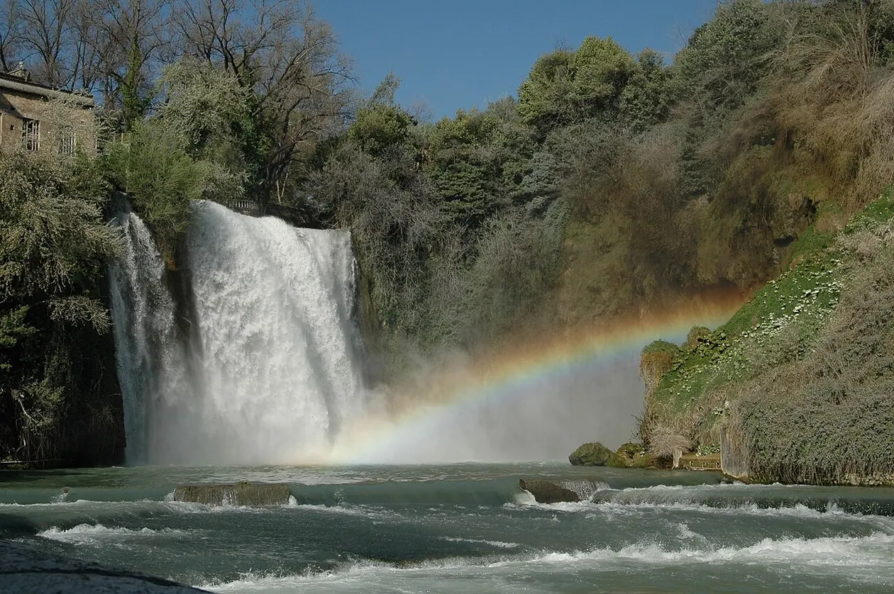
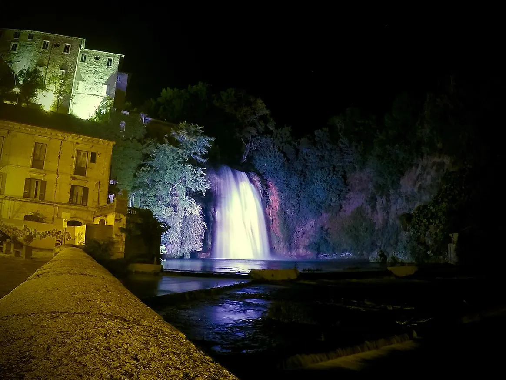

Energia, edifici e sicurezza.
Soluzioni tecniche per i tuoi progetti.
Progettazione energetica e fotovoltaica, incentivi per le aziende, pratiche edilizie, direzione lavori e sicurezza. A Isola del Liri, nel territorio di Sora e Frosinone.
DANIELE D’ORAZIO · INGEGNERE AMBIENTALE

Di cosa hai bisogno?
Partiamo dal tuo progetto.
Non devi conoscere il nome della pratica. Scegli la tua esigenza e scopri come Daniele può aiutarti.
Servizi di ingegneria.
Ambiti di intervento.
Approfondisci le attività tecniche e scopri cosa comprende ciascun servizio.
Progettazione energetica e APE
Progettazione energetica degli edifici e attestati di prestazione energetica.
Scopri il servizio 02 / FOTOVOLTAICOImpianti fotovoltaici
Progettazione di impianti fotovoltaici e gestione delle pratiche di allaccio alla rete.
Scopri il servizio 03 / INCENTIVIIncentivi energetici per aziende
Supporto tecnico per pratiche di accesso agli incentivi energetici, inclusi Agrisolare e Conto Termico, secondo i requisiti applicabili.
Scopri il servizio 04 / EDILIZIAPratiche edilizie
CILA, SCIA e autorizzazioni paesaggistiche per gli interventi che richiedono pratiche tecniche.
Scopri il servizio 05 / CANTIERIDirezione lavori e sicurezza
Direzione dei lavori e coordinamento della sicurezza nelle fasi previste dall'incarico.
Scopri il servizio 06 / AZIENDESicurezza nei luoghi di lavoro
Consulenza tecnica in materia di salute e sicurezza nei luoghi di lavoro.
Scopri il servizio
Isola del Liri · Foto: defual / Wikimedia Commons · CC BY-SA 4.0Dall’idea al progetto.
Energia, impianti
e documentazione.
Dal progetto energetico alla scelta dell’impianto fotovoltaico, ogni intervento parte da una valutazione tecnica delle esigenze, dei vincoli e della documentazione necessaria.
Scopri la progettazione fotovoltaica ↗Prima capire.
Poi trovare
la strada giusta.
Mi chiamo Daniele D’Orazio, sono un ingegnere ambientale a Isola del Liri. Mi occupo di progettazione energetica e impianti fotovoltaici, pratiche edilizie, direzione lavori e sicurezza.
Seguo anche gli aspetti energetici delle pratiche per incentivi destinati alle aziende, tra cui Agrisolare e Conto Termico, secondo i requisiti delle misure applicabili.
ATTIVITÀ COMUNICATE DAL PROFESSIONISTA · DATI DI ALBO DA INSERIREAscolto e inquadramento
Si parte dall’immobile, dal progetto e dalle tue esigenze, per definire cosa serve davvero.
Analisi e sopralluogo
Documenti, rilievi e verifiche per costruire un quadro tecnico del caso.
Un risultato chiaro
Documentazione e indicazioni spiegate con un linguaggio comprensibile.
Radici a Isola del Liri.
Attenzione a ogni progetto.
Isola del Liri · Provincia di Frosinone
Isola del Liri, Sora e la provincia di Frosinone sono il contesto territoriale di riferimento del sito. La disponibilità effettiva per incarichi e sopralluoghi va confermata con il professionista.
Le prime risposte, senza complicazioni.
Ti occupi anche delle pratiche di allaccio del fotovoltaico?
Sì. Tra le attività indicate da Daniele ci sono sia la progettazione dell’impianto sia le pratiche di allaccio alla rete. Le modalità dipendono dall’intervento e dal gestore competente.
Segui le pratiche per Agrisolare e Conto Termico?
Daniele si occupa degli aspetti tecnici energetici delle pratiche di accesso agli incentivi per le aziende. L’ammissibilità e la disponibilità delle misure devono essere verificate caso per caso.
Posso rivolgermi a te per CILA, SCIA o autorizzazioni paesaggistiche?
Sì, sono attività che Daniele ha indicato tra i propri servizi. La procedura necessaria dipende dalla tipologia e dalla localizzazione dell’intervento.
Segui anche la sicurezza in cantiere e sul lavoro?
Sì. Le attività comprendono coordinamento della sicurezza, direzione lavori e sicurezza nei luoghi di lavoro, secondo gli incarichi e i requisiti applicabili.
Parliamo del tuo
incarico tecnico.
Raccontami brevemente di cosa hai bisogno e dove si trova l’immobile o l’attività.
Ingegnere ambientale
Isola del Liri (FR)
Scriviciinfo@danieledorazio.it
Email in attivazione, recapito da verificare
Il recapito sarà utilizzabile dopo il completamento della configurazione del servizio email.